| 1. 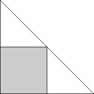 | 2. 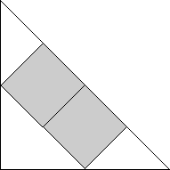 | 3. 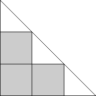 | ||
| s = 2 Trivial. | s = 2√2 = 2.828+ Trivial. | s = 3 Trivial. |
| 4. 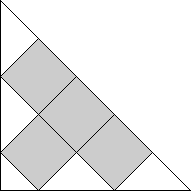 | 5. 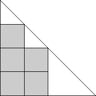 | 6. 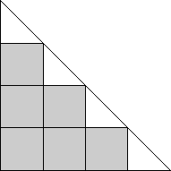 | ||
| s = 5 / √2 = 3.535 Found by Erich Friedman in March 2005. | s = 4 Found by Erich Friedman in March 2005. | s = 4 Trivial. |
| 7. 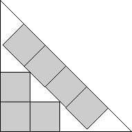 | 8. 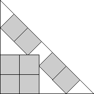 | 9. 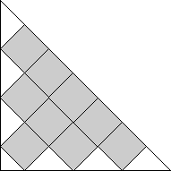 | ||
| s = 3 + √2 = 4.414+ Found by Erich Friedman in March 2005. | s = 2 + 2√2 = 4.828+ Found by Erich Friedman in March 2005. | s = 7 / √2 = 4.949+ Found by Erich Friedman in March 2005. |
| 10. 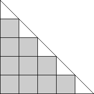 | 11. 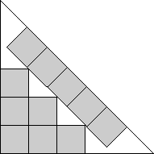 | 12. 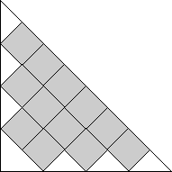 | ||
| s = 5 Trivial. | s = 4 + √2 = 5.414+ Found by Erich Friedman in March 2005. | s = 4√2 = 5.656+ Found by Erich Friedman in March 2005. |
| 13. 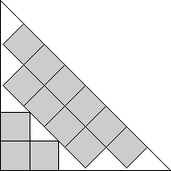 | 14. 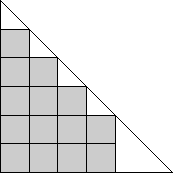 | 15. 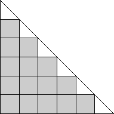 | ||
| s = 3 + 2√2 = 5.828+ Found by Erich Friedman in March 2005. | s = 6 Found by Erich Friedman in March 2005. | s = 6 Trivial. |
| 16. 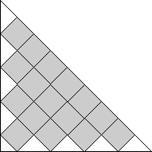 | 17. 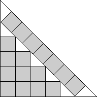 | 18. 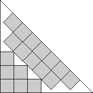 | ||
| s = 9 / √2 = 6.363+ Found by Erich Friedman in March 2005. | s = 5 + √2 = 6.414+ Found by Erich Friedman in March 2005. | s = 4 + 2√2 = 6.828+ Found by Erich Friedman in March 2005. |
| 19. 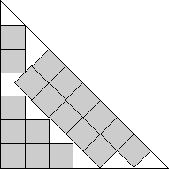 | 20. 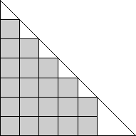 | 21. 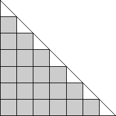 | ||
| s = 2 + 7 / √2 = 6.949+ Found by David W. Cantrell in May 2005. | s = 7 Found by Erich Friedman in March 2005. | s = 7 Trivial. |
| 22. 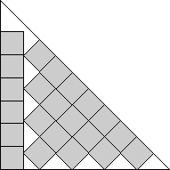 | 23. 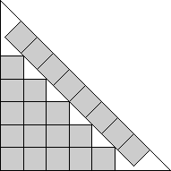 | 24. 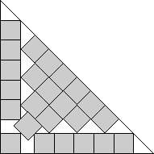 | ||
| s = 1 + 9 / √2 = 7.363+ Found by Erich Friedman in March 2005. | s = 6 + √2 = 7.414+ Found by Erich Friedman in March 2005. | s = 7 + 1 / √2 = 7.707+ Found by David W. Cantrell in May 2005. |
| 25. 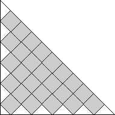 | 26. 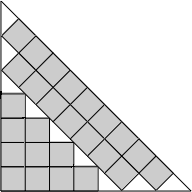 | 27.-28. 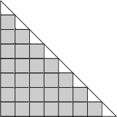 | ||
| s = 11 / √2 = 7.778+ Trivial. | s = 5 + 2√2 = 7.828+ Found by Erich Friedman in March 2026. | s = 8 Trivial. |
| 29. 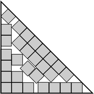 | 30. 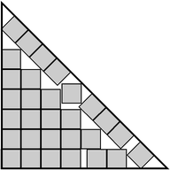 | 31. | ||
| s = 8.36396+ Found by Joshua Wolk in September 2026. | s = 7 + √2 = 8.41421+ Found by Joshua Wolk in September 2026. | s = 8.48528+ Found by Joshua Wolk in September 2026. |
| 32. 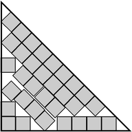 | 33. 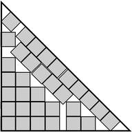 | 34. 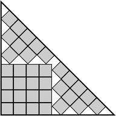 | ||
| s = 8.77817+ Found by Joshua Wolk in September 2026. | s = 6 + 2√2 = 8.82842+ Found by Yanis Gomes in October 2026. | s = 4 + 7/√2 = 8.94974+ Found by Yanis Gomes in October 2026. |
| 35.-36. 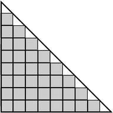 | 37. 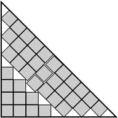 | 38.-39. 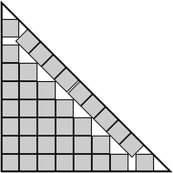 | ||
| s = 9 Trivial. | s = 9.24264+ Found by Joshua Wolk in September 2026. | s = 8 + √2 = 9.41421+ Found by Joshua Wolk in September 2026. |
| 40. 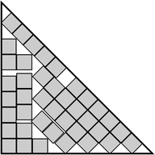 | 41.-42. 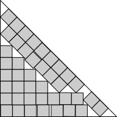 | 43. 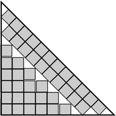 | ||
| s = 9.77817+ Found by Joshua Wolk in September 2026. | s = 7 + 2√2 = 9.82842+ Found by Yanis Gomes in October 2026. | s = 9.89949+ Found by Joshua Wolk in September 2026. |
| 44.-45. 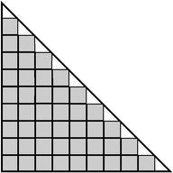 | 46. 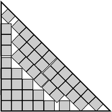 | 47.-48. 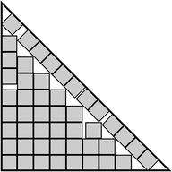 | ||
| s = 10 Trivial. | s = 10.24264+ Found by Joshua Wolk in September 2026. | s = 9 + √2 = 10.41421+ Found by Joshua Wolk in September 2026. |
| 49. 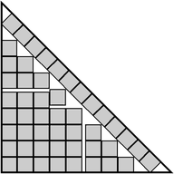 | 50. 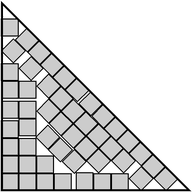 | |
| s = 10.60660+ Found by Joshua Wolk in September 2026. | s = 10.65685+ Found by Oihan Barreneche in October 2026. |